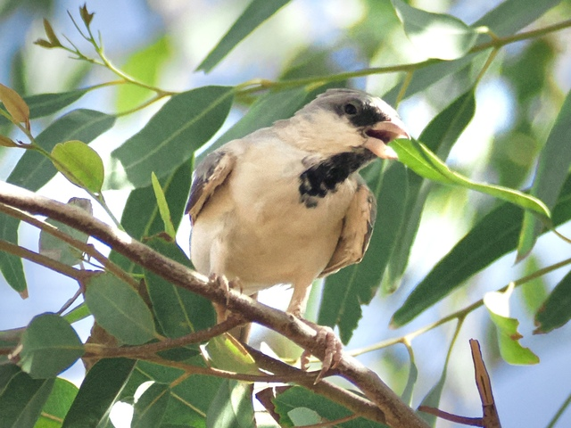
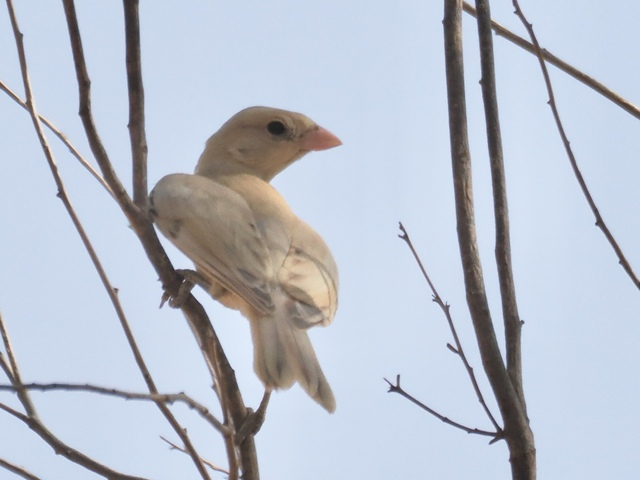

Desert Sparrow
Passer simplex
Order: Passeriformes
Family: Passeridae

Similar to House Sparrow. Lacks the streaking brown pattern on the back. Male has a grey cap, dark lores and throat.

Female is quite very pale, with no obvious markings. Favours desert habitats. Faces a major threat from competition with House Sparrow, which is more aggressive and adaptable in ever-expanding artificial environments.